Hey, je suis Valentin Samson
Faisons vivre votre prochain événement
Résumé · Championnats de France route Élite
La Tour-du-Pin 2026
© Fédération Française de Cyclisme · tous droits réservés
Voir mes projets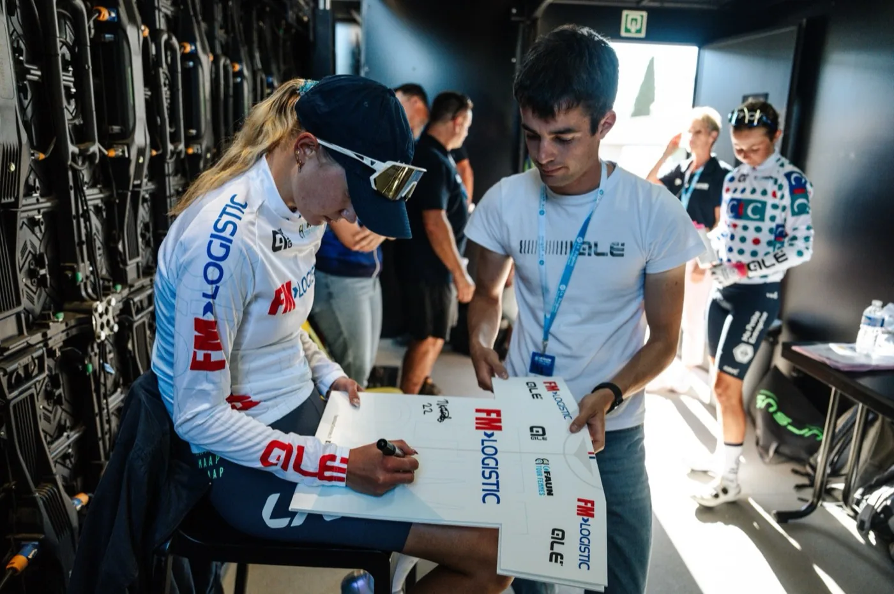
DisponibleQui suis-je ?
Valentin Samson
Community manager · événementiel cyclisme
Je pilote les réseaux sociaux des grandes courses cyclistes, comme le Faun Tour Femmes ou L'Ardéchoise, avant, pendant et après l'événement : stratégie, contenus, couverture en direct et bilan chiffré. Du départ au podium, je sais où me placer pour l'image qui compte et comment raconter une course à ceux qui ne sont pas au bord de la route.
- SpécialitéÉvénementiel cyclisme
- FormationBUT MMI · IUT de Lannion
- Basé àLannion · Lyon
- TerrainCouverture live des courses
- Faun Tour Femmes
- Championnats d'Europe UEC
- Boucles Drôme Ardèche
- L'Ardéchoise
- Circuit de Saône-et-Loire
- Fédération Française de Cyclisme
- Alé Cycling
- In Yellow Consulting
Mes grandes missions
Les courses cyclistes dont j'ai porté la communication.

Faun Tour Femmes 2026
Communication avant, pendant et après la course, maillots de leader, fonds de podium et organisation événementielle d'une course féminine internationale : 1,6 million de vues sur les réseaux.

Championnats d'Europe de cyclisme 2025
Quatre jours de couverture live et de production photo au cœur de l'élite européenne, en Drôme-Ardèche.

Boucles Drôme Ardèche 2026
Calendrier éditorial pour une course UCI ProSeries, supports de podium et images en caméra embarquée.

L'Ardéchoise 2026
Huit mois de community management pour l'une des plus grandes cyclosportives d'Europe : +30 % d'abonnés Instagram et 2,2 millions de vues Facebook.
En 30 secondes
Mon univers en mouvement
Les courses, les chiffres et les routes de mes missions, résumés en un motion design.
Questions fréquentes
Voici les questions qu'on me pose le plus souvent. Si vous en avez d'autres, n'hésitez pas à me contacter.
Que fais-tu concrètement sur un événement ?
Je prends en charge les réseaux sociaux avant, pendant et après l'événement. Avant, je construis le calendrier éditorial et je génère des inscriptions. Pendant, je couvre tout en direct : stories, Reels, photos, résultats. Après, je fidélise la communauté et je livre un bilan chiffré à l'organisation.
Quels événements as-tu déjà couverts ?
La communication du Faun Tour Femmes 2026 (course féminine internationale, 6 heures de direct télé), la couverture des Championnats d'Europe de cyclisme 2025 (800 athlètes, 45 nations), les Boucles Drôme Ardèche 2026 (UCI ProSeries) et les réseaux sociaux de L'Ardéchoise 2026 (8 mois de community management, 2,2 millions de vues Facebook). Mais aussi les Championnats de France sur route Élite 2026, les Championnats de France VTT, le Circuit de Saône-et-Loire, la Coupe de France de cyclo-cross et les Championnats de France de cross.
Peux-tu publier en direct pendant la course ?
Oui, c'est le cœur de mon travail. Sur L'Ardéchoise, j'ai publié 83 stories en cinq jours et des Reels quotidiens. Aux Championnats d'Europe, j'ai suivi quatre jours de course au plus près, du départ aux podiums.
Tu produis aussi les photos et les vidéos ?
Oui : je tourne, je photographie et je monte moi-même, au sol comme au drone. Plus de 4 000 photos produites rien que sur les Championnats d'Europe et les France VTT. Je crée aussi les visuels (affiches, posts, supports partenaires) sur Photoshop, Illustrator et Premiere Pro.
Es-tu disponible pour de nouveaux projets ?
Je suis en alternance chez In Yellow Consulting, agence de marketing sportif, et ouvert aux missions de community management événementiel et de création de contenu. Si besoin, je peux aussi m'occuper du site ou de la boutique en ligne de l'événement. Le plus simple : m'écrire via le formulaire ci-dessous ou m'appeler au 07 69 51 71 40.
Contact
Parlons de votre prochain événement
Une course à couvrir, une communauté à animer ou une marque à faire grandir ? Écrivez-moi ou appelez-moi directement.
- Emailsamson.valentin2005@gmail.com
- Téléphone07 69 51 71 40
- Instagram@valentin.samson
- CVTélécharger en PDF
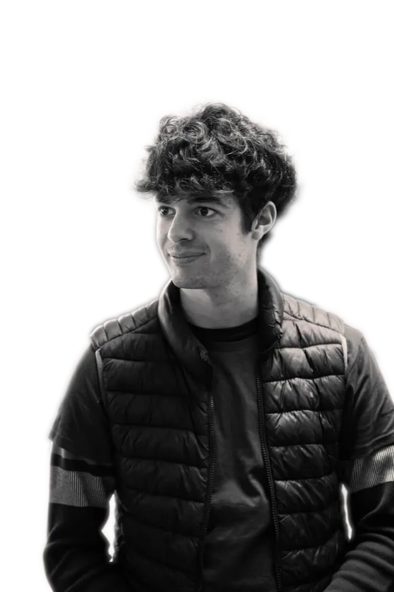
Valentin Samson
Disponible · Lannion & LyonAu bord de la route
Le terrain en images
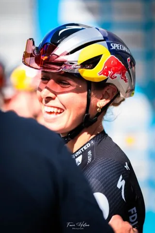
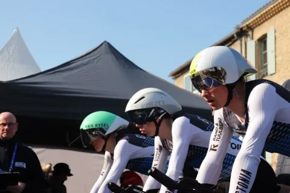
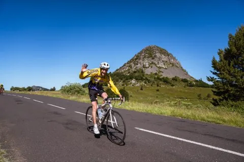
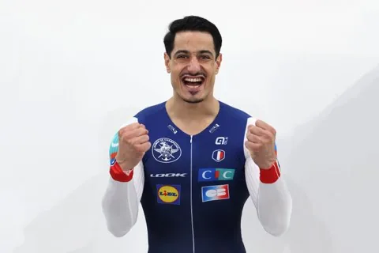
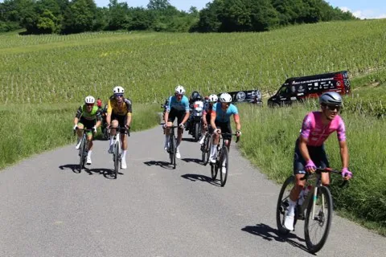
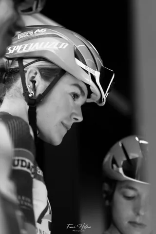
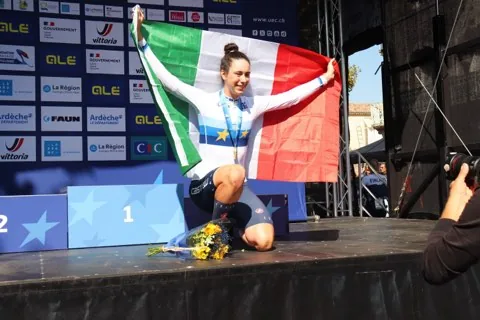
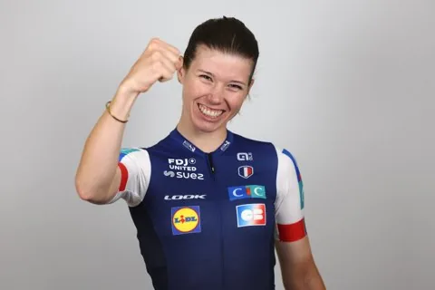
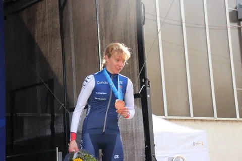
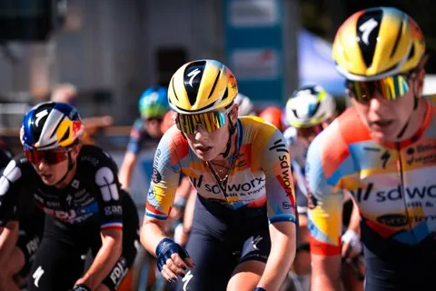
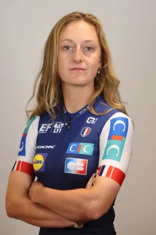
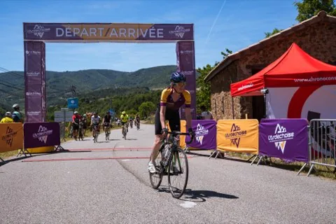
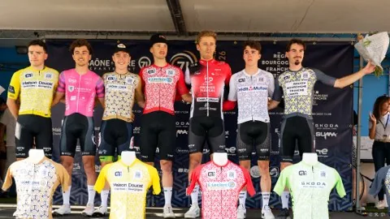
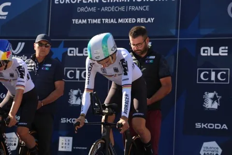
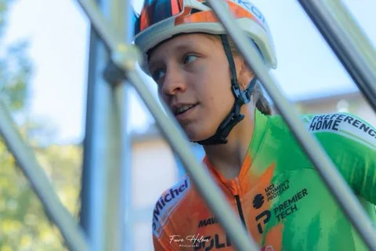
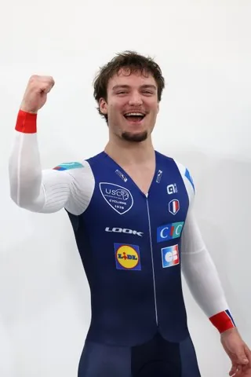
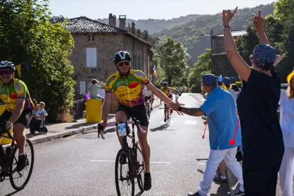
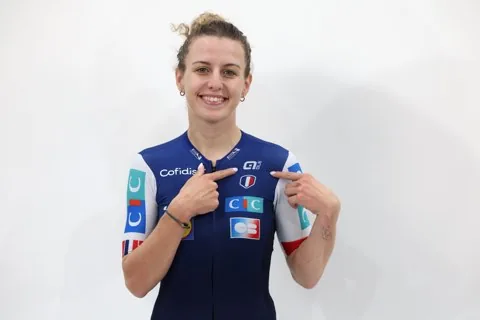
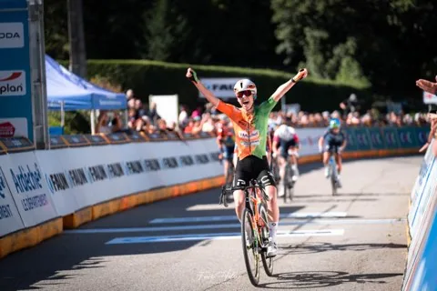
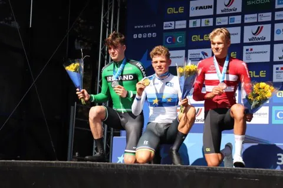
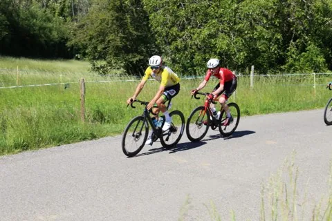
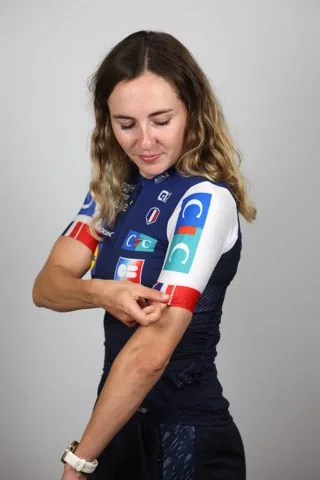
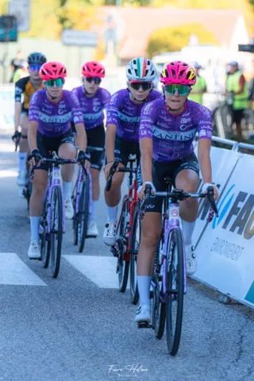
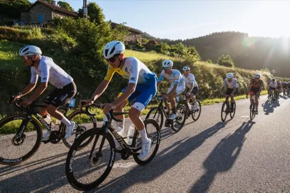
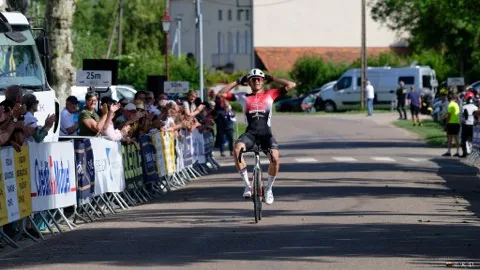
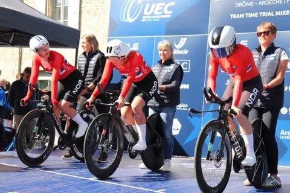
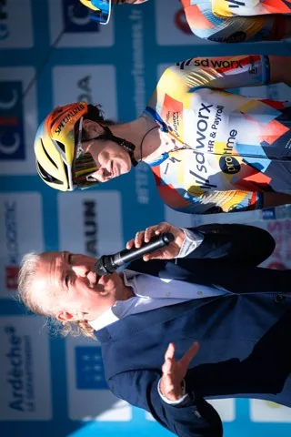
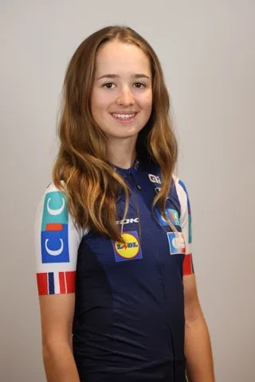
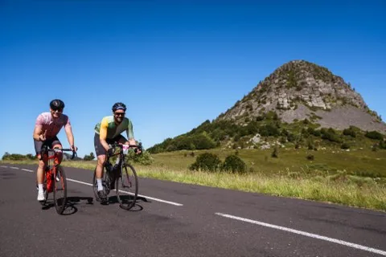
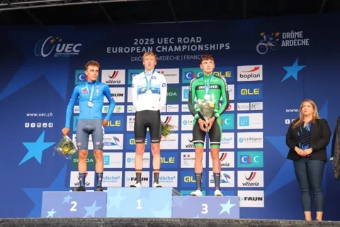
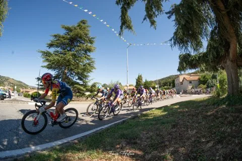
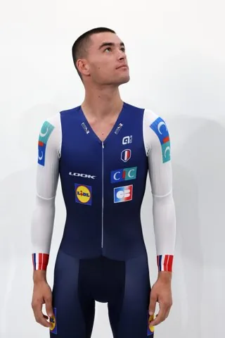